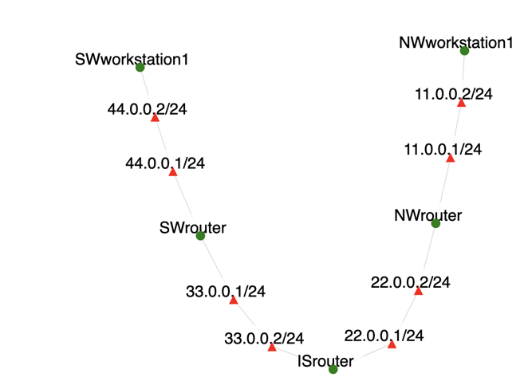

Overview
This exercise simulates a local experiment you might do with physical equipment, in which the equipment were supplied connected but unconfigured. You receive a mini-internetwork that can be viewed as a small scale model of the Internet. You are called upon to configure:
- IP addressing
- route tables
- private address prohibition
- network address translation
- port forwarding
You will use the commands ifconfig, route, and iptables to do it. There are 5 nodes and in addition to using the commands correctly, you must understand on which nodes to do so and for what purposes. Proper working of the internetwork as a whole ultimately depends critically upon proper configuration in detail at all its constituent nodes.
Introduction
You will work with the topology shown below:

It is sparse, but it is meant to mimic connectivity concepts in real Internet. Workstation nodes are end nodes in end networks (e.g., laptops, desktops), and each is connected to their own router. Those routers (SWrouter and NWrouter) are connected together by the public Internet (mimicked by node ISrouter).
It's very important to understand NIC selection and enumeration (naming) in this experiment. SPHERE nodes generally have multiple ethernet interfaces (NICs). You don't fully control which get used nor what addresses they receive. An experiment node that uses a single NIC might use eth2 today, but eth5 when you repeat the experiment tomorrow. Imagine creating the equivalent of a SPHERE experiment, but with local equipment. When cabling two machines together, if they held 5 NICs each, you would need to pick particular NICs in which to plug your cable ends. You could use any free NIC you wanted, but once chosen you would have to be mindful which NICs you used. For example when conferring IP addresses you must apply the ifconfig command to the same NICs that possess the cable. Otherwise you do so in vain. Sniffing, you must apply Wireshark to those same interfaces. Otherwise you sniff in vain.
Assignment Instructions
Setup
- If you don't have an account, follow the instructions here.
-
Create an instance of this exercise by following the instructions here, using
internetworkingas Lab name. Your topology will look like below:.
- After setting up the lab, access your nodes.
Tasks
Applying IP addresses
Let's look at the initial state of your nodes, in terms of IP addressing. Visit each of them, and type:
ifconfigYou should see several interfaces with IP addresses. Focus on those that do NOT have address 127.x.x.x (localhost) or 172.30.x.x (control interface, used by SPHERE). In the topology diagram shown above, interfaces appear as red triangles with IP addresses.
Your goal in this exercise will be to change the IP addresses on corresponding interfaces as show below:
| Previous address | New address |
|---|---|
| 44.0.0.2 | 10.1.0.2 |
| 44.0.0.1 | 10.1.0.1 |
| 33.0.0.2 | 3.0.0.2 |
| 33.0.0.1 | 3.0.0.1 |
| 22.0.0.2 | 2.0.0.2 |
| 22.0.0.1 | 2.0.0.1 |
| 11.0.0.2 | 10.0.0.2 |
| 11.0.0.1 | 10.0.0.1 |
To enact these changes you will need to:
- Identify which network interface (e.g., eth1, eth2, etc.) currently has each of the addresses in the first column of the table above. Use
ifconfigcommand to find out and note this down, e.g., "44.0.0.2 on eth1 at SWworkstation1" -
Remove the old address on the corresponding node and interface, e.g.,
sudo ip addr del 44.0.0.2/24 dev eth1 -
Add the new address on the corresponding node and interface, e.g.,
sudo ip addr add 4.0.0.2/24 dev eth1
Repeat these steps for all rows in the table above and use ifconfig to verify that your changes worked. Now make sure all these links are working. On ISrouter ping the SWrouter and NWrouter, on SWrouter ping on SWworkstation1, and on NWrouter ping NWworkstation1. You should receive replies to all these pings. If you don't, retrace your steps and ensure that you are changing correct interfaces on correct nodes.
Inserting routes in route tables
Set the 4 routing tables (one in each node) such that we have universal connectivity within our little 4-LAN, 5-node universe. There are a number of ways to do it. Explicit and/or default routes can be used. The idea is that each node requires knowledge how to dispatch a packet to any other node in the network.
For example, nodes SWworkstation1 and NWworkstation1 could have a default route (route to 0.0.0.0/0) via their corresponding routers. On SWworkstation you would type:
sudo ip route add 0.0.0.0/0 via 10.1.0.1where 10.1.0.1 is the address on SWrouter that connects to SWworkstation1. On other nodes, you can add explicit routes. For example on ISrouter you would add a route to 10.0.0.0/24 via NWrouter:
sudo ip route add 10.0.0.0/24 via 2.0.0.2where 2.0.0.2 is the address on ISrouter that connects to NWrouter. You can check the routing table on any node by typing:
ip route showWhen you complete this task, you should be able to ping every IP address from the table above (right column) from every node. Please do some spot checking. In particular make sure the endpoints can ping each other.
Blocking the same "private addresses" as the Internet
If we are trying to simulate the Internet, we need to implement its prohibition against certain addresses. The internet dislikes all that begin with 10, because these are considered "private". Two of our LANs (NW and SW) have these private addresses. Internet routers are required to filter these addresses (defined in rfc1918, "... packets with private source or destination addresses should not be forwarded across [inter-enterprise] links. Routers in ... Internet service providers, are expected to be configured to reject (filter out) routing information about private networks."). Let's do exactly the same, in our Internet surrogate router.
OA On ISrouter:
sudo iptables -I FORWARD -d 10.0.0.0/8 -j DROPsudo iptables -I FORWARD -s 10.0.0.0/8 -j DROPThe iptables is the command for building firewalls. Our rules specify that any packet addressed to ("-d" destination) or from ("-s" source) the private address range 10.0.0.0/8 must be dropped. Check that end-to-end pings do not work anymore. You can also run traceroute on one of the end points and verify that it can only go one more hop, and then it gets dropped.
For example on SWworkstation1:
traceroute -n 10.0.0.2
traceroute to 10.0.0.2 (10.0.0.2), 30 hops max, 60 byte packets
1 10.1.0.1 0.909 ms 0.849 ms 0.830 ms
2 3.0.0.2 1.501 ms 1.467 ms 1.448 ms
3 * * *
4 * * *Configuring NAT in LAN routers
Network address translation (a.k.a. NAT or IP masquerading) is a technique to overcome this communication disability suffered by privately addressed LAN nodes (the majority within home, school, and office networks). Internet-facing routers (like our NWrouter and SWrouter) do it by "lending" their operationally valid "public" IP addresses to packets coming from their workstations contaminated with the workstations' "private" ones. These routers will rewrite private addresses with their public address, and reverse the effect by rewriting replies from the Internet to private addresses.
And these commands implement NAT on NWrouter (replace ethX with the NIC that has address 2.0.0.2)
On NWrouter:
sudo iptables -t nat -A POSTROUTING -o ethX -s 10.0.0.0/24 -j SNAT --to 2.0.0.2Do similar operation on SWrouter to rewrite 10.1.0.0/24 with 3.0.0.1. Now try pinging from SWworkstation1 and observe traffic on ISrouter. You can do that by identifying the interface on ISrouter that has IP address 3.0.0.2, e.g., ethX and running:
sudo tcpdump -i ethX -nnYou will note first of all that at SWworkstation1 the ping works (reports getting replies as usual). And secondly that the packets shown in transit through ISrouter do not bear the address of their originating node SWworkstation1 but rather that of the intermediate router SWrouter.
This still doesn't solve the end-to-end problem. You still can't ping from NWworkstation1 to SWworkstation1. That's because you solved the source half of that problem, but not the destination half. Ping packets still have destinations within the private range and will be filtered by ISrouter.
Port forwarding
The end-to-end problem can be helped by port forwarding, which has kinship with NAT in that it alters IP values in packets. In our case, the Apache web server is running on SWworkstation1 and we will use wget to reach it from NWworkstation1.
On SWrouter we will rewrite all packets going to its own public IP (3.0.0.1) and port 80 to go to SWworkstation1 (IP address 10.1.0.2) instead.
On SWrouter:
sudo iptables -t nat -A PREROUTING -i ethX -d 3.0.0.1 -p tcp --dport 80 -j DNAT --to 10.1.0.2This says that arriving ("-i ethX") packets containing destination IP 3.0.0.1 and tcp segments ("-p tcp") with destination port 80 ("--dport 80") should have their IP headers' destination address changed ("DNAT" or destination network address translation) to ("--to") 10.1.0.2 instead. Once that's done, the altered packet should be processed normally by the network machinery-- whereby the place it will get taken will be the place to which it's (newly) addressed. Then on NWworkstation1:
wget 3.0.0.1The browser receives the Web page from SWworkstation1. You can verify this by running on SWworkstation1:
sudo tcpdump -i ethX -nnwhere ethX is the interface with IP address 10.1.0.2.
As a security note, please understand that while port forwarding works well and is a long-standing way to grant access to servers on machines behind internet routers, it provides no confidentiality. That is, the data is not encrypted. There are a variety of other methods, also in widespread use, to achieve the same access plus additionally take steps to encrypt the traffic (ssh, stunnel, OpenVPN).
What can go wrong
You can mess up your route table entries. In that case, the commands that enter them (shown above) can be reversed by re-issuing them verbatim except for changing add to del. You can mess up your firewall rules. You can examine regular firewall rules with "iptables -nL" and the NAT ones with "iptables -t nat -nL". You can flush out your firewall with "iptables -F". You can remove an individual firewall rule by re-issuing verbatim the iptables command that created it except for chaning the "-A" (add) to "-D" (delete) instead. Worst case of course you could terminate the experiment and re-run it.
Submission Instructions
Submit one Word document with the following:
For the addressing task, submit a drawing of your topology with IP addresses and interfaces (e.g., ethX) labeled. For routing, NAT and port forwarding, submit all the commands you ran to complete the task.